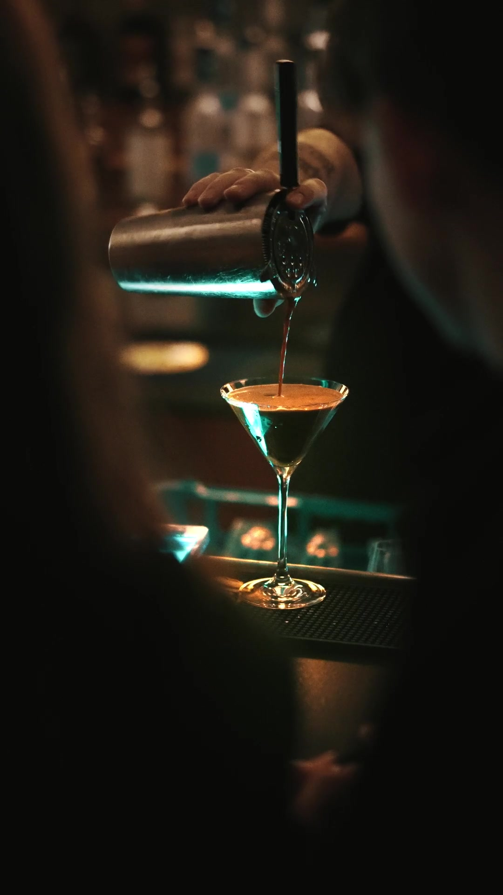
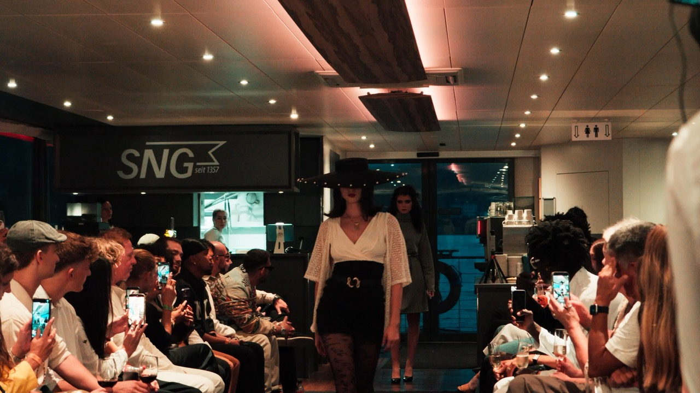
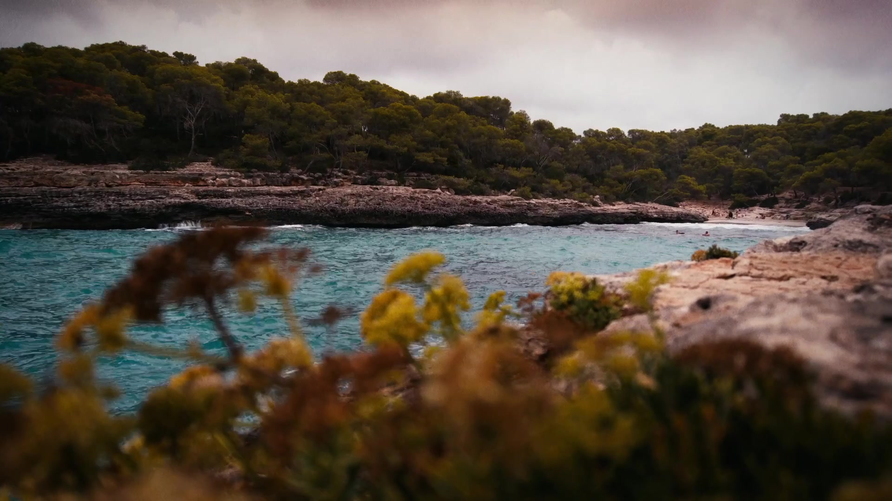
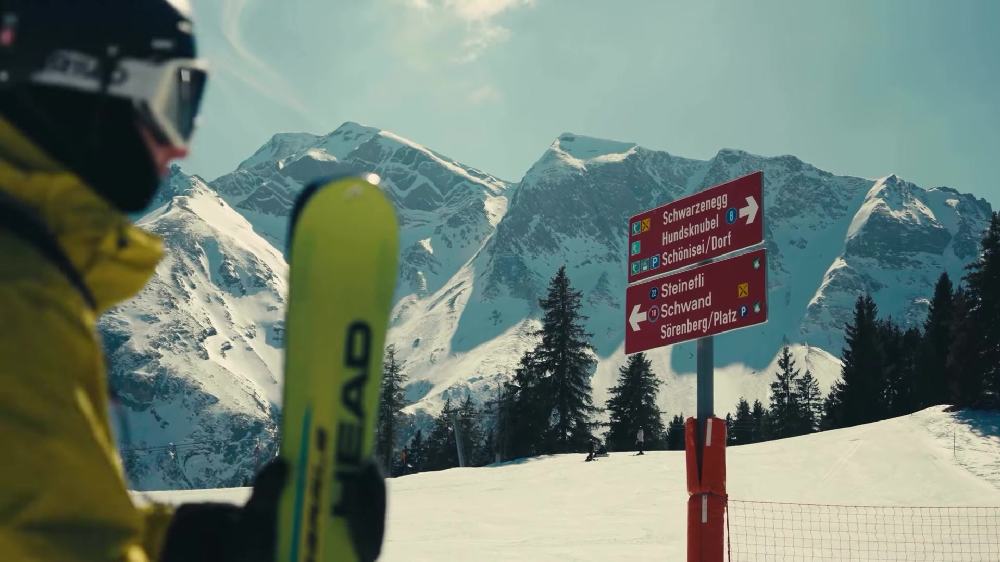
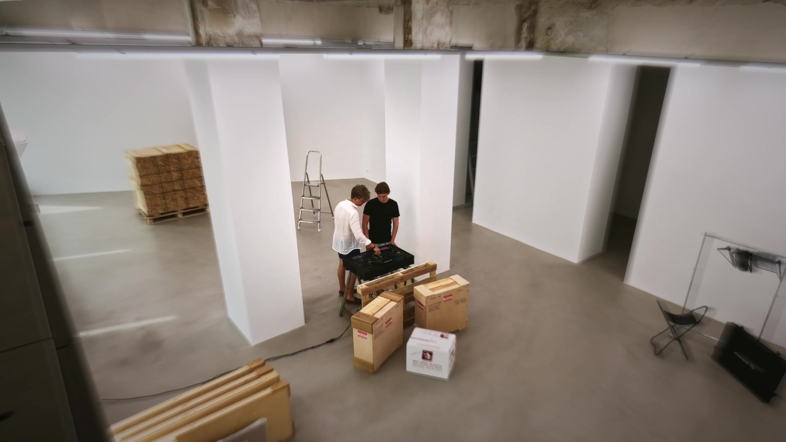

Selected Work
Eventvideos, Aftermovies, Musik und eigene Projekte von Livio Krummenacher, Videograf aus Luzern.
-

Timeless Tunes × Frizzli -

Orofani -
 Timeless Tunes
Timeless Tunes
-

Mar de Pins -

Arc'teryx Spec Ad -

Castor